学校管理者の操作
学校管理者は、学校のすべてのクラスの学生・応募を扱い、教員アカウントと学科・クラス・資格を管理します。はじめて使うときは、上から順に進めてください。
はじめに：ログインとパスワード変更
発行メール（件名「【R-eadership】ご利用の準備ができました」）に書かれた学校コード・教員ID・仮のパスワードでログインし、すぐに自分のパスワードに変えます。
- メールの「ログイン画面」の URL を開き、学校コード・教員ID・パスワードを入れて「ログイン」を押します。学校コードは小文字でも通ります。
- 画面右上の「パスワード変更」を押し、いまの（仮の）パスワードと新しいパスワード（8〜64文字）を入れて「変更する」を押します。
- 変えたら、発行メールは削除します。
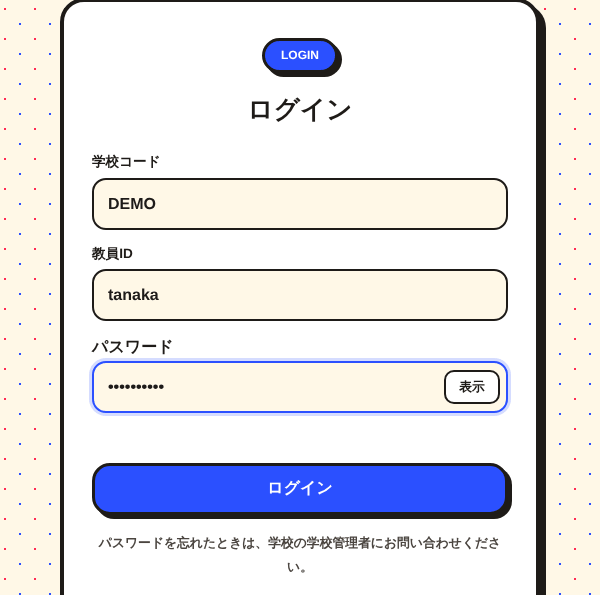
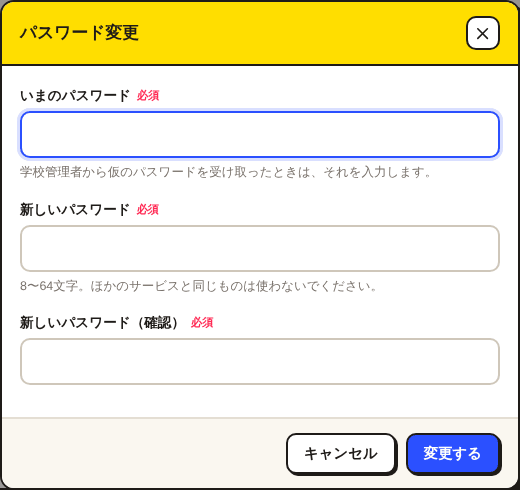
ログインは6時間で切れます。別の端末で同じ教員IDでログインすると、前の端末はログアウトします。パスワードを5回まちがえると、15分ログインできません。学校管理者のパスワードを忘れたときは、提供者のお問い合わせフォームから連絡します。
最初の準備：修業年限・学科・クラス・資格
左のメニュー「学科・クラス・資格」で、学生名簿のプルダウンに使うものを先に登録します。学科とクラスは関係しません。学生ごとに、学科とクラスをそれぞれ選びます（例：1年A組に、会計学科と観光学科の学生がいてもよい）。
- 学校の修業年限：いちばん上の枠の「変更」で、学校が何年制か（1〜4年）を選びます。学科ごとに年数がちがうときは、いちばん長い年数にします。クラスの学年は、1年からこの年数までから選べます。
- 学科：「学科」タブ →「学科を追加」で、学科名とラベルを入れます。
- クラス：「クラス」タブ →「クラスを追加」で、学年・クラス名・ラベルを入れます。
- 資格：「資格」タブ →「資格を追加」で、資格名・ラベル・分類を入れます。
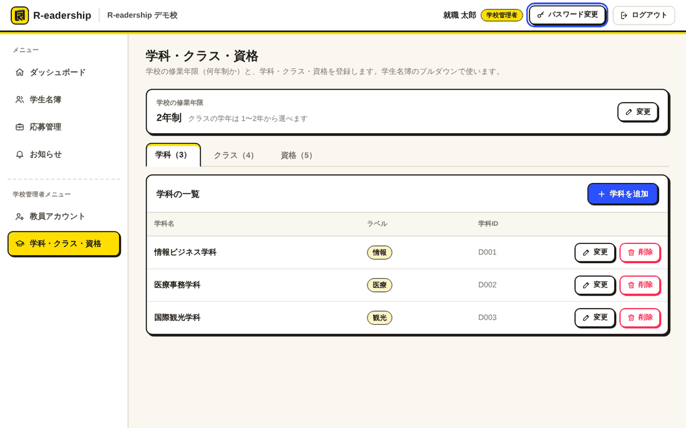
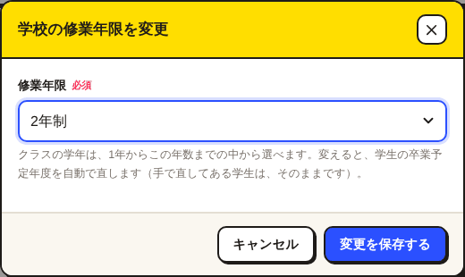
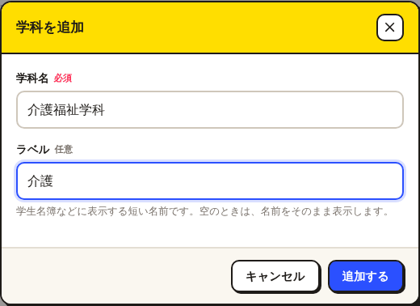
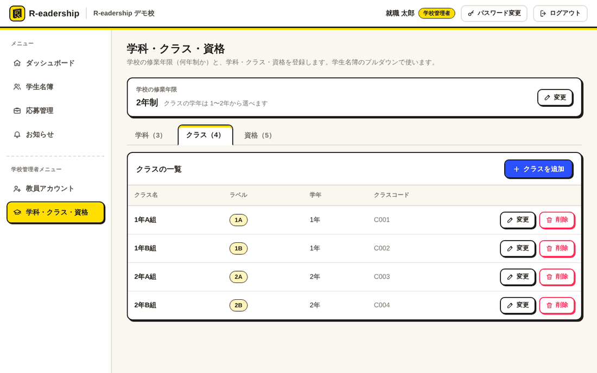
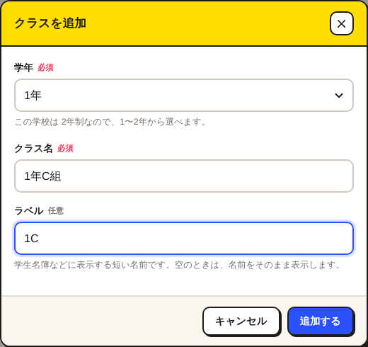
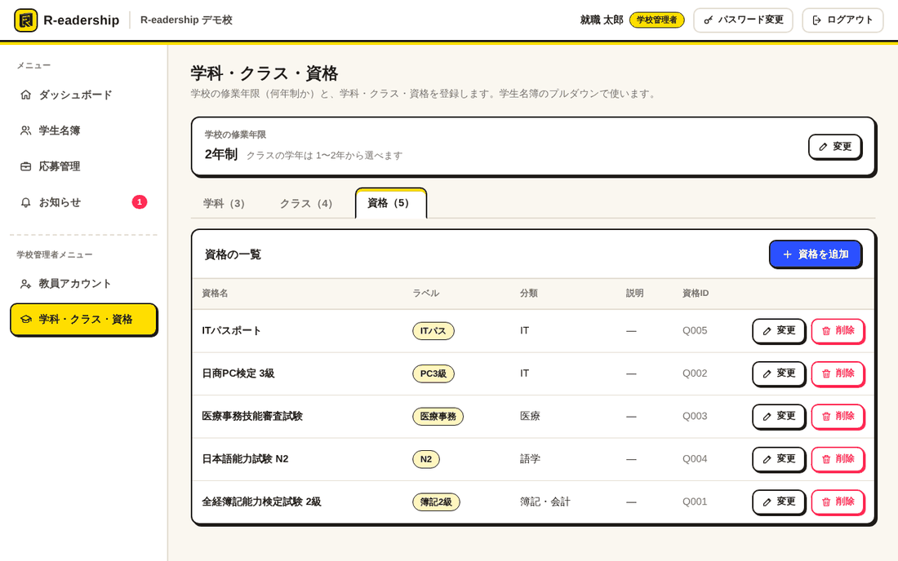
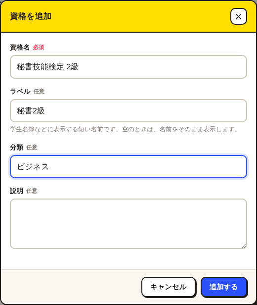
- ラベルは、学生名簿などに出す短い名前です（例：「全経簿記能力検定試験 2級」→「簿記2級」）。空なら名前をそのまま出します。名前もラベルも、同じものは登録できません。
- 卒業予定年度は「今年度＋学校の修業年限−クラスの学年」で自動で入ります（年度は4月はじまり）。修業年限やクラスの学年を変えると、学生の卒業予定年度も自動で直ります（手で直した学生はそのまま）。
- 使われているものは削除できません（学科：学生がいる、クラス：学生か担当の教員がいる、資格：取得した学生がいる）。
教員アカウント
左のメニュー「教員アカウント」で、先生方のアカウントを発行します。教員は、担当クラスの学生だけを見られます。
- 「教員アカウントを発行」を押し、教員ID（英数字と - _ の3〜20文字。あとから変えられません）・名前・権限・担当クラスを入れて「発行する」。
- 仮のパスワードが1回だけ表示されます。学校コード・教員ID・仮のパスワードを本人に伝え、ログイン後に「パスワード変更」で変えてもらいます。
- 一覧の各行で、「変更」（名前・権限・担当クラス）、「PW再設定」（新しい仮のパスワードを発行）、「停止」（ログインできなくする。「再開」でもとに戻る）ができます。
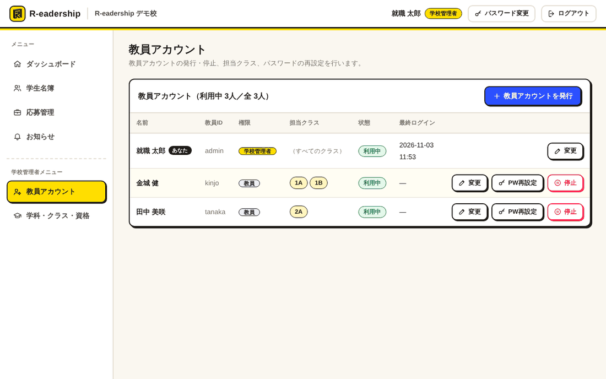
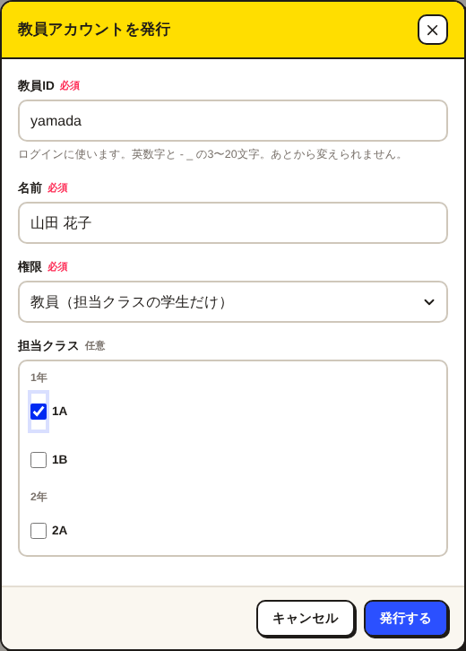
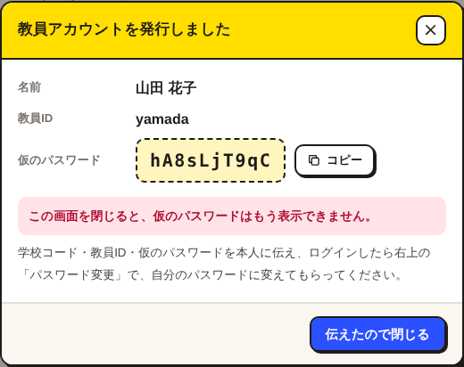
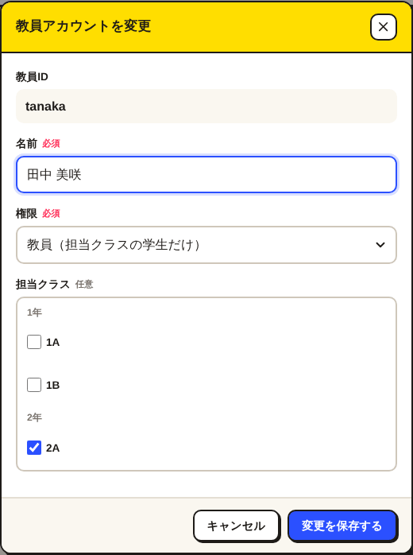
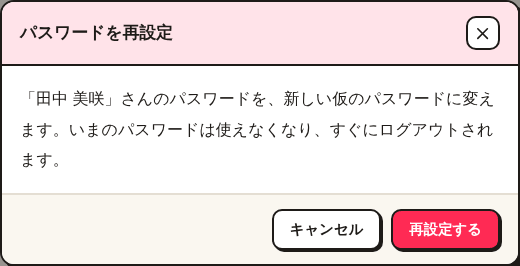
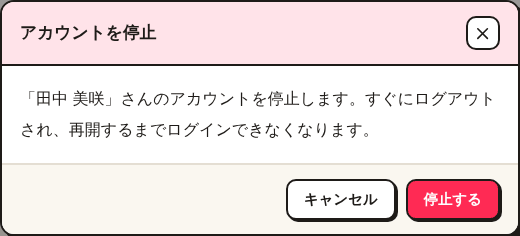
| 権限 | 見られる学生 | できること |
|---|---|---|
| 学校管理者 | すべてのクラス | すべて。教員アカウント、学科・クラス・資格、学生の登録・基本情報の変更・削除、CSV |
| 教員 | 担当クラスだけ | クラス移動・在籍状態の変更、希望進路・資格・メモ、応募と指導記録、お知らせ |
自分のアカウントは停止できません。ほかの先生のアカウントを変更すると、その先生は一度ログアウトします。
学生名簿
左のメニュー「学生名簿」で、学生の登録から進級・卒業までを扱います。上の人数のカードを押すと、その在籍状態でしぼりこめます。一覧は30人ずつで、「取得資格」タブでは資格ごとの ✓ の表に切り替わります。
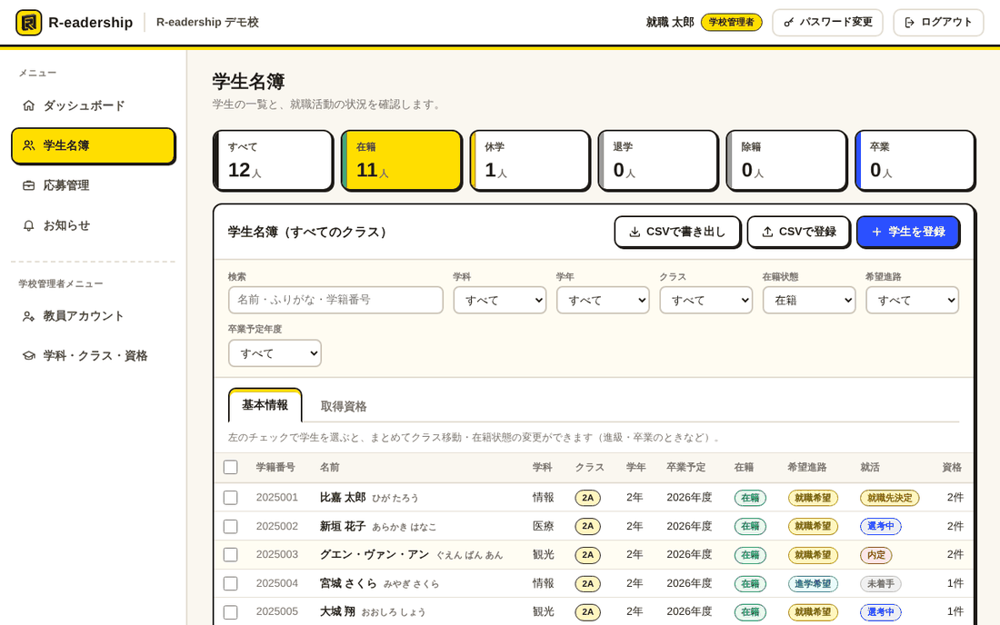
1人ずつ登録する
「学生を登録」を押し、学籍番号・名前・学科・クラスを入れます（ふりがな・生年月日・性別・国籍・電話・メールは任意）。クラスを選ぶと、学年と卒業予定年度が自動で入ります。留年などのときは、卒業予定年度を直します。
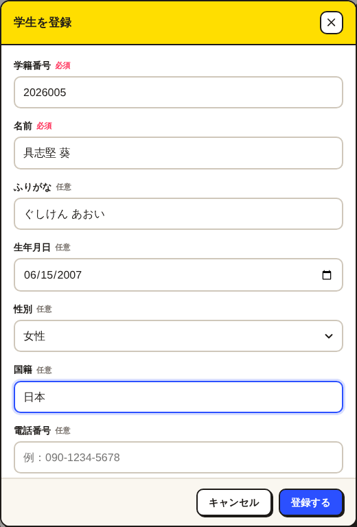
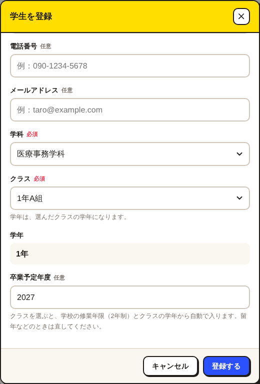
CSVでまとめて登録する
- 「CSVで登録」→「ひな形（CSV）」をダウンロードし、Excel などで学生を入れます。必ず入れるのは「学籍番号」「名前」「学科」「クラス」です（学科・クラスはラベルでも名前でもよい）。
- CSV 形式で保存し、「CSVファイル」で選びます。まず内容を確かめるので、直すところがあれば行ごとに表示されます。
- まちがいがなければ「登録する」。1回に500人まで。1件でもまちがいがあると、1件も登録されません。
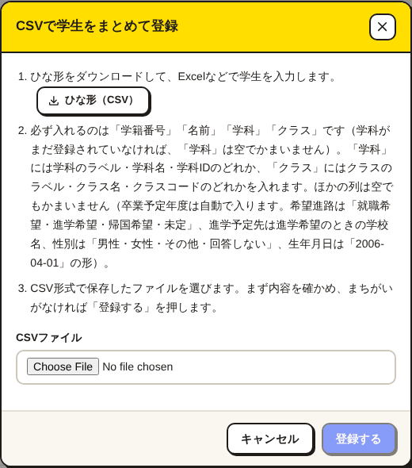
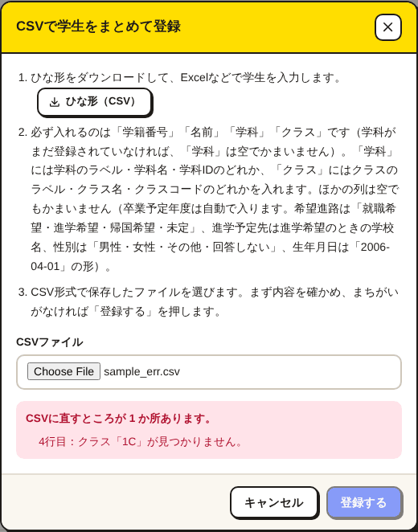
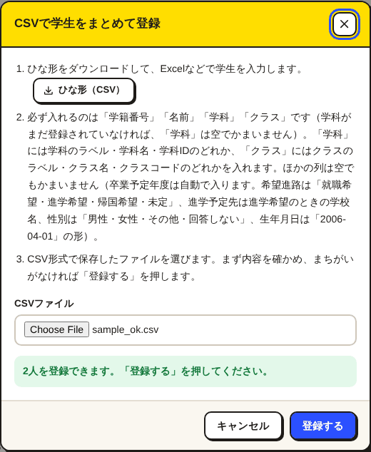
詳しい画面
学生の名前を押すと、基本情報・応募・指導記録・変更履歴が開きます。下のボタンで、クラス移動・在籍状態の変更・希望進路と資格とメモ・基本情報の変更・削除ができます。
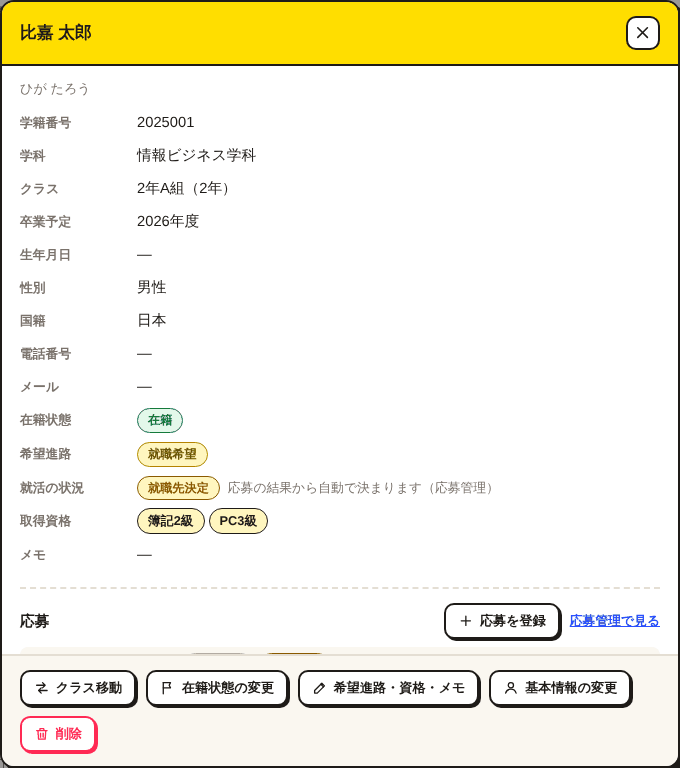
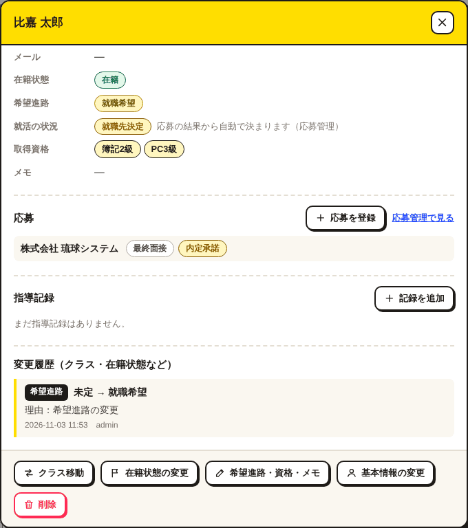
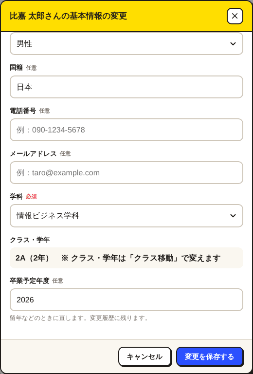
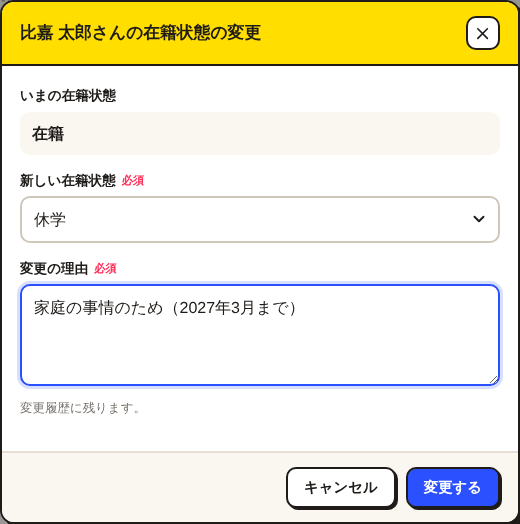
- クラス移動・在籍状態の変更（在籍・休学・退学・除籍・卒業）は、理由が必須で、変更履歴に残ります。学年を変えるときは、その学年のクラスへ移動します。
- 学科の変更は「基本情報の変更」で行います。
- 削除は、まちがえて登録したときだけです。応募や指導記録がある学生は削除できないので、退学・卒業などは在籍状態で表します。
- 就活の状況（未着手・選考中・内定・就職先決定・選考終了）は、応募の結果から自動で決まります。
進級・卒業のとき（まとめて変更）
- しぼりこみで対象の学生を出します（例：学年「2年」）。
- 一覧の左のチェックで学生を選びます（見出しのチェックで、そのページの全員）。
- 「まとめてクラス移動」（進級）か「まとめて在籍状態の変更」（卒業）を押し、理由を入れて実行します。全員に同じ理由が残ります。
年度末は、先に最上級生を「卒業」にしてから、下の学年を上の学年のクラスへ移動すると、名簿がまざりません。
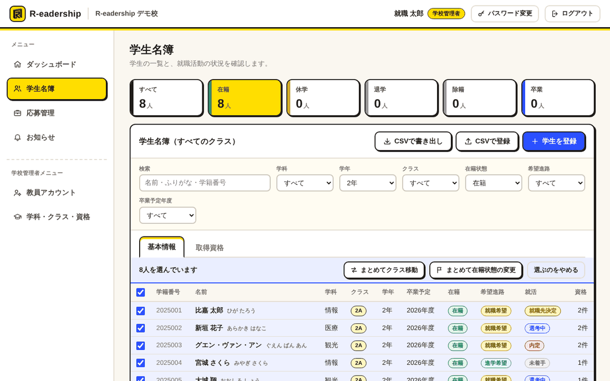
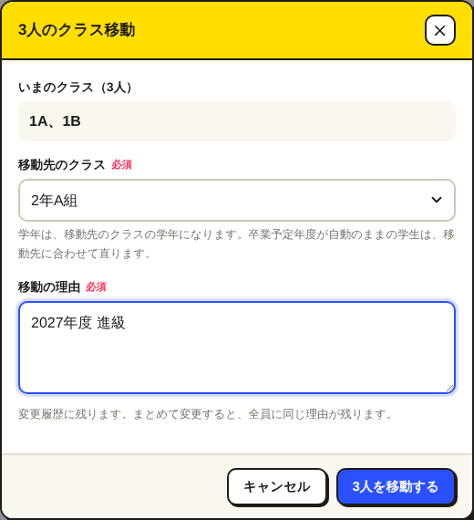
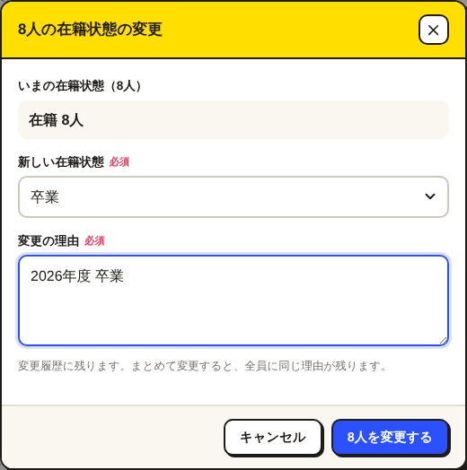
「卒業」にした学生のデータは、卒業から3年たった4月に、応募・指導記録・履歴といっしょに自動で削除されます。
CSVで書き出す
「CSVで書き出し」で、いましぼりこんでいる学生を、すべてのページの分まとめて保存します（学校管理者だけ）。個人情報が入るので、使い終わったらパソコンから削除します。
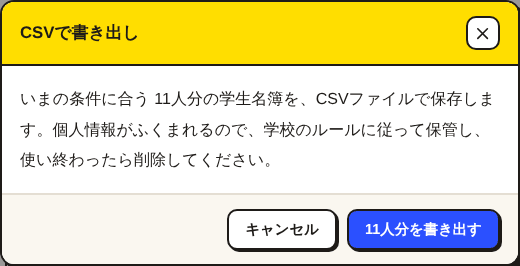
応募管理
左のメニュー「応募管理」で、学生ごとの応募と選考の進み具合を記録します。一覧は、次の予定が近い順に並びます。くわしい操作は「教員の操作」の「応募管理」と同じです。
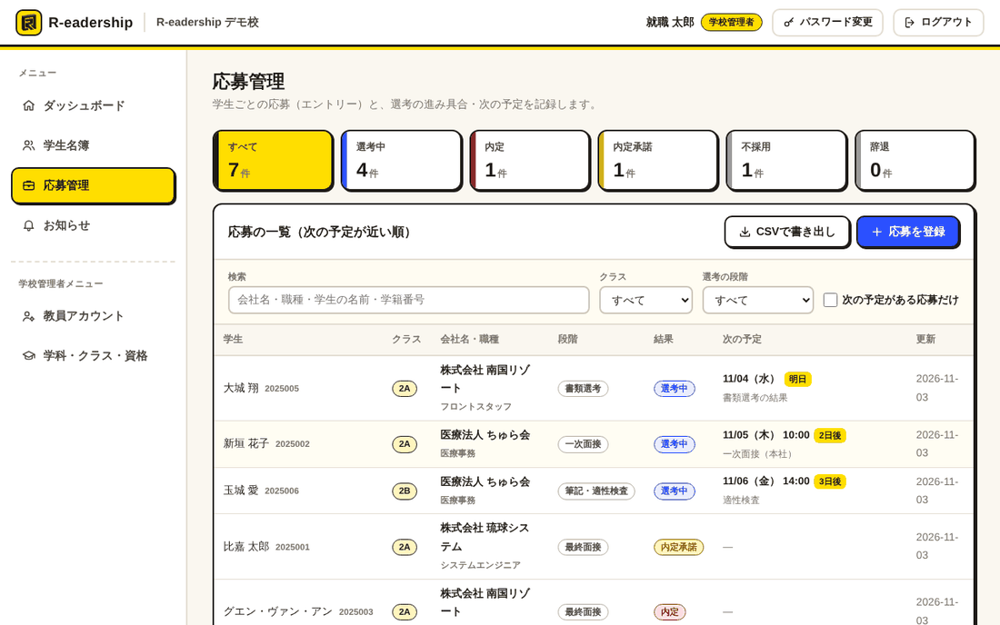
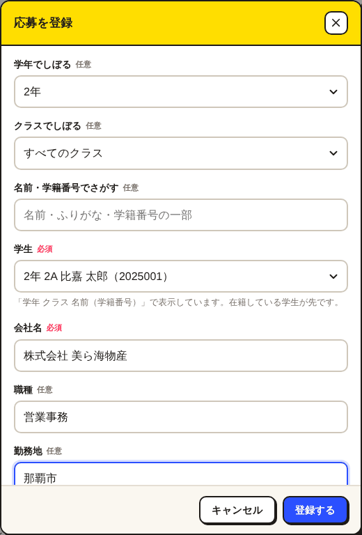
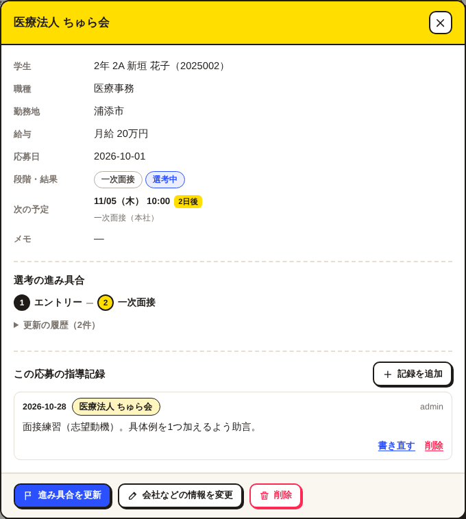
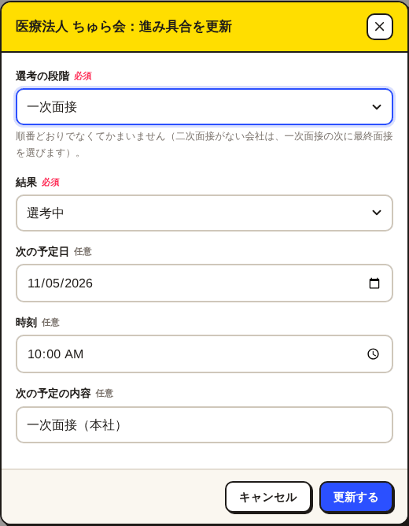
- 応募ごとの「進み具合を更新」で、選考の段階（エントリー〜最終面接）と結果（選考中・内定・内定承諾・不採用・辞退）を変えます。「内定承諾」は1人1社だけです。
- 「CSVで書き出し」で、いまの条件の応募を保存できます（学校管理者だけ）。
- 指導記録は、書いた本人と学校管理者が直したり消したりできます。
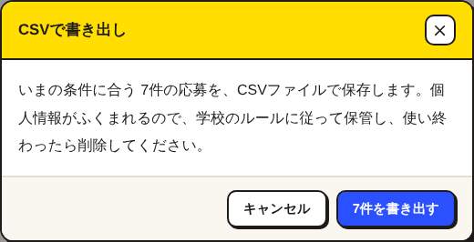
ダッシュボード
ログインすると最初に開く画面です。卒業予定年度（はじめは今年度に卒業する学年）と学科でしぼりこめます。数えるのは、在籍と卒業の学生です。
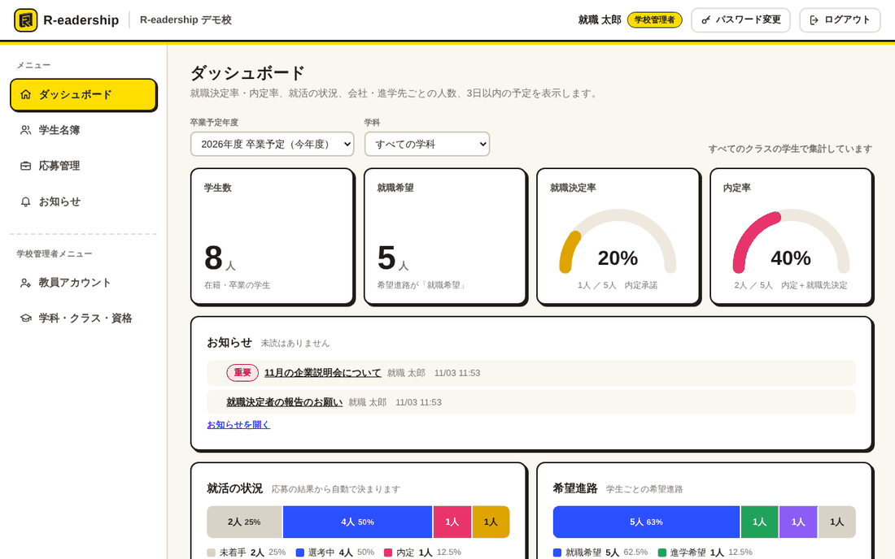
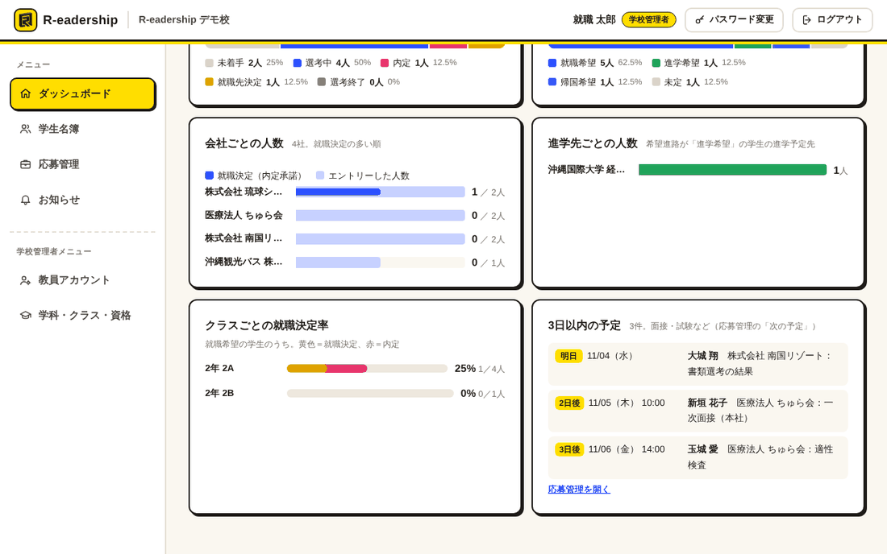
- 就職決定率 ＝「内定承諾」の学生 ÷ 希望進路が「就職希望」の学生。内定率は、内定と内定承諾を合わせた割合です。
- 3日以内の予定には、応募の「次の予定日」が今日から3日以内のものが出ます。
お知らせ
左のメニュー「お知らせ」で、先生方への連絡を書きます。未読があると、メニューに赤い数字が出ます。
- 「お知らせを書く」を押し、タイトル・本文・重要かどうか・公開範囲を入れて「投稿する」。
- 公開範囲は「全体（すべての先生）」「学校管理者」「個人（宛先の先生を何人でも）」から選びます。
- 自分のお知らせを開くと、だれが読んだかがわかります。返信もできます。
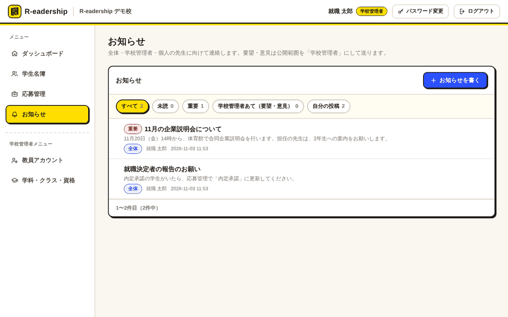
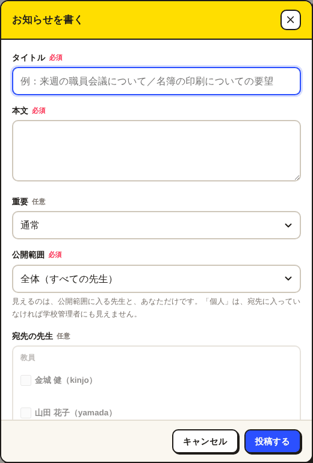
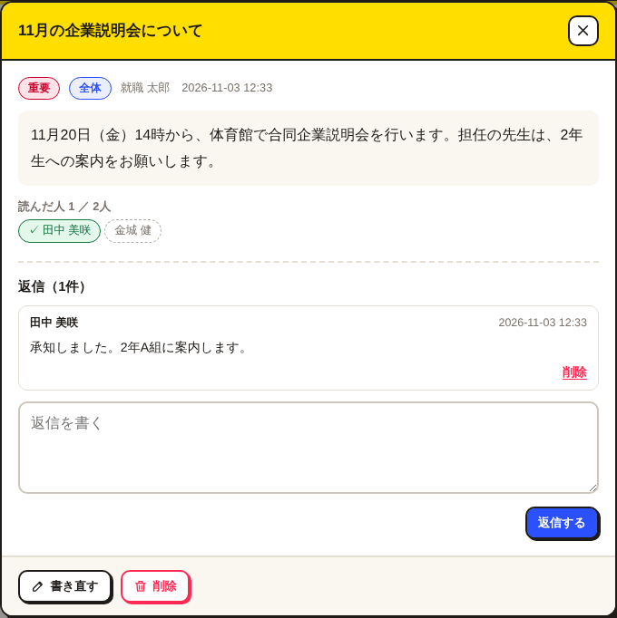